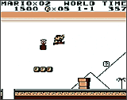
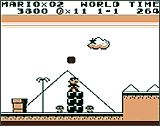

|
|
| このゲームは、右方向スクロールのアクションゲームです。マリオは、ピラプト王国、ミューダ王国、イーストン王国、チャイ王国の4つの王国からなるサラサ・ランドを冒険します。各ワールドは、3つのエリアにわかれていて、3つ目のエリアには、ワールドのボスがいます。各エリアは決められた時間内に通過しなければいけません。マリオは、さまざまな強敵が待ち受けるワールドを、力の限り走り、ジャンプし潜水艇や、飛行機に乗りデイジ−姫の捕らえられているとゆうチャイ王国を目ざします。 |
|
ワールド1ーピラプト王国／ワールド2ーミューダ王国 ワールド3ーイーストン王国／ワールド4チャイ王国 ※ワールド2のエリア3と、ワールド4のエリア3は、自動スクロールのシューティングになっています。 ※各ワールドの、ボスのうしろにあるゲート前のスイッチを踏むとゲートが開き、次のワールドへ進めるます。 |
|  |  |


|